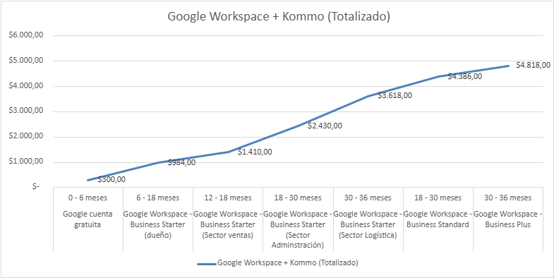

Justificación de la selección
Evaluación del cumplimiento esperado
En cuanto al cumplimento esperado, todos superan en medidas comparables lo que el equipo de consultoría tenía en consideración.
Se elige a Google Workspace por la escalabilidad y los costos cuando pasan a ser muchas más cuentas. Y como Partner, una evaluación preliminar (sin confirmar) nos ha indicado que su cumplimiento es mejor que el resto de los partners evaluados (con la misma vara).
Cabe mencionar que estas herramientas tuvieron un filtro previo en cuanto al aspecto económico, dado que se tenía como limitante un presupuesto acotado.
Análisis de brechas de cumplimiento
Al optar por la alternativa de Google Workspace Business Básico, se detectan brechas específicas frente a las necesidades operativas de Avíos Lynch S.A. A continuación se detalla el análisis y su tratamiento correspondiente:
Aspecto / Requisito No Cubierto | Cobertura en GW Business Básico | Estrategia de Tratamiento Seleccionada | Justificación y Plan de Acción |
|---|---|---|---|
1. Bandeja de Entrada Unificada Omnicanal (WhatsApp, Instagram y Web) | 25% (Sólo correo Gmail) | Desarrollo Adicional / Integración Externa | Gmail Básico no centraliza mensajería instantánea ni redes sociales. Se requiere integrar una plataforma CRM u omnicanal Open Source (ej. EspoCRM) conectada mediante API REST a la infraestructura de Google. |
2. Control de Stock, Pedidos y Trazabilidad Textil | 25% (Hojas de cálculo Google Sheets) | Cambio de Proceso + ERP Open Source | Las planillas de Google sirven para registros sencillos pero carecen de Kardex o trazabilidad industrial de avíos. Se debe realizar un cambio de proceso operativo adoptando un ERP liviano (ej. Dolibarr u Odoo Community) vinculado a Google Drive como repositorio documental. |
3. Automatización y Chatbot de Respuesta Comercial | 25% (Sin automatización externa) | Negociación con el Proveedor (SPEK, como una de las opciones) | Google Workspace Básico no incluye bots de respuesta para WhatsApp. Se acordará con el partner a elegir (ej.: SPEK) la implementación de un conector de mensajería automatizada externo (ej. Twilio o pasarela asociada). |
4. Respaldos Externos Independientes (Offsite Backups) | 75% (Papelera corporativa y versión de archivos) | Aceptación del Gap con Mitigación Interna | El plan Básico incluye retención en papelera y redundancia de Google, pero no Google Vault. Se acepta el gap manteniendo las políticas de seguridad nativas y ejecutando respaldos locales periódicos mediante secuencias administrativas previamente definidas (ej: tener otra nube de respaldo y otra carpeta en la misma nube). |
Consideraciones sobre el proceso de selección
Si bien no se han tenido demos de los productos específicos y sólo tenido respuestas a los mails entregados por uno de los partners de los cuatro elegidos, partner que no prefirió seguir con la conversación ya que “no eran 1000 cuentas y no era compra segura”, tenemos conocimientos desde internet y varios sitios oficiales (desde la herramienta ofimática en la nube (Microsoft 365 como Google Workspace, como de los partners contactados) y extraoficiales (como YouTube donde distintos youtubers muestran características de los productos, realizan demostraciones de uso, menúes, soluciones y cursos) en donde se muestra la información necesaria para la toma de esta decisión.
Asimismo, por lo que el propio cliente nos comentó que las planillas no son automatizadas, no tienen fórmulas y están alojadas en las carpetas personales creemos que la migración hacia la nube, como se ha establecido en documentos anteriores, debe ser modular tanto desde la perspectiva del área como las transiciones entre “on-premise” (dentro de las computadoras personales) a “cloud” de manera gradual y ordenada.
Los aspectos que han quedado pendientes son aquellos que no corresponden a este proyecto en particular que es la parte de las métricas generales de negocio para la toma de decisiones con soluciones de servidores en nube y los open source, que los consideramos que en el momento actual la empresa no posee un volumen de empleados para justificar la incorporación de personal que solo se dedique a la infraestructura o a la seguridad informática. Ésto es una recomendación a futuro es evaluar la posibilidad del pase a un servidor cloud, dejar las ofimáticas de lado y pasar a una solución open source con la incorporación de personal que refleje separaciones y funciones conjuntamente con una evaluación a conciencia de los cambios en los procesos y de su actualización, para que realmente quede reflejado en una formalización de los mismos.
Hemos realizado dos escenarios para visualizar los costos asociados.
Escenario 1: Una sola cuenta Business
El flujo de datos hacia la carpeta compartida y las funcionalidades adyacentes que puedan utilizar, justificando que el el crecimiento de una sola cuenta que nuclea los permisos de acceso. En este aspecto, se evaluó solamente la capacidad de almacenamiento del Google Drive como diferencial. Haciendo la suposición que en los primeros 6 meses comienzan con una cuenta gratuita de 15 GB, luego pasan al primer “tier” de business“Starter” de 30 GB que contempla el siguiente año (meses 6 al 18), siguiendo con una mejora de capacidad de 2 TB (meses 18 al 30) con el Business Standard y por último, 5 TB a partir de los 30 meses de inicio del proceso por el Business Plus.
Plataforma y Plan | Tiempo | Precio USD / Usuario / Mes (Pago Anual) | Kommo CRM | Google Workspace + Kommo (Mensual) | Google Workspace + Kommo (Período) | Google Workspace + Kommo (Totalizado) |
|---|---|---|---|---|---|---|
Google cuenta gratuita | 0 - 6 meses | $- | $50,00 | $50,00 | $300,00 | $300,00 |
Google Workspace - Business Starter | 6 - 18 meses | $7,00 | $50,00 | $57,00 | $684,00 | $984,00 |
Google Workspace - Business Standard | 18 - 30 meses | $14,00 | $50,00 | $64,00 | $768,00 | $1.752,00 |
Google Workspace - Business Plus | 30 - 36 meses | $22,00 | $50,00 | $72,00 | $432,00 | $2.184,00 |

Escenario 2: Escenario 1 + cuentas individuales business en progresión modular de ingreso.
Al flujo del escenario 1, se me suma que al año de iniciado, se vayan incorporando al flujo cuentas creadas inicialmente gratuitas para los 8 miembros, pero modularmente convirtiéndolas al tier “business starter” a medida que necesiten ser incorporadas. En este escenario simulado, hemos contemplado que a los 12 meses comiencen las cuentas relacionadas a ventas que faltaban (el dueño ya estaría contemplado en el escenario 1) conjuntamente a la de la diseñadora; pasado el semestre, incorporar al sector administrativo (dos cuentas adicionales) y al último semestre (meses 30 al 36) la última incorporación del personal de logística.
Plataforma y Plan | Tiempo | Precio USD / Usuario / Mes (Pago Anual) | Kommo CRM | Google Workspace + Kommo (Mensual) | Google Workspace + Kommo (Período) | Google Workspace + Kommo (Totalizado) |
|---|---|---|---|---|---|---|
Google cuenta gratuita | 0 - 6 meses | $- | $50,00 | $50,00 | $300,00 | $300,00 |
Google Workspace - Business Starter (dueño) | 6 - 18 meses | $7,00 | $50,00 | $57,00 | $684,00 | $984,00 |
Google Workspace - Business Starter (Sector ventas) | 12 - 18 meses | $21,00 | $50,00 | $71,00 | $426,00 | $1.410,00 |
Google Workspace - Business Starter (Sector Adminstración) | 18 - 30 meses | $35,00 | $50,00 | $85,00 | $1.020,00 | $2.430,00 |
Google Workspace - Business Starter (Sector Logística) | 30 - 36 meses | $49,00 | $50,00 | $99,00 | $1.188,00 | $3.618,00 |
Google Workspace - Business Standard | 18 - 30 meses | $14,00 | $50,00 | $64,00 | $768,00 | $4.386,00 |
Google Workspace - Business Plus | 30 - 36 meses | $22,00 | $50,00 | $72,00 | $432,00 | $4.818,00 |

Conclusiones
Se concluye que como un primer acercamiento a la estandarización de procesos, separación de funciones y toma de decisiones, y, asimismo, con el fin de prevenir pérdidas de información, las que se traducen en pérdidas monetarias y, en cierta medida, reputacional, la elección de una de estas herramientas y su versión paga para un usuario que será aquel que de accesos a carpetas, tipo de acceso, el que podrá bloquear campos en archivos excel para evitar sobreescrituras, escrituras erróneas. El cliente deberá optimizar estas planillas para que todo sea lo más automático posible y que solo ingrese información de pocos campos que no entren en conflicto con métricas.
Al momento de este trabajo de consultoría, la herramienta que refleja dinámicamente y es más sencilla de trabajar es Google Sheets, siendo Google Workspace el indicado para las empresas. Comenzando con cuentas gratuitas para posteriormente incorporar una cuenta paga en donde pueda ponerse toda la información en conjunto evitando datos duplicados, desactualizados y con los debidos accesos según el sector de la entidad, para evitar que haya fuga de información confidencial.